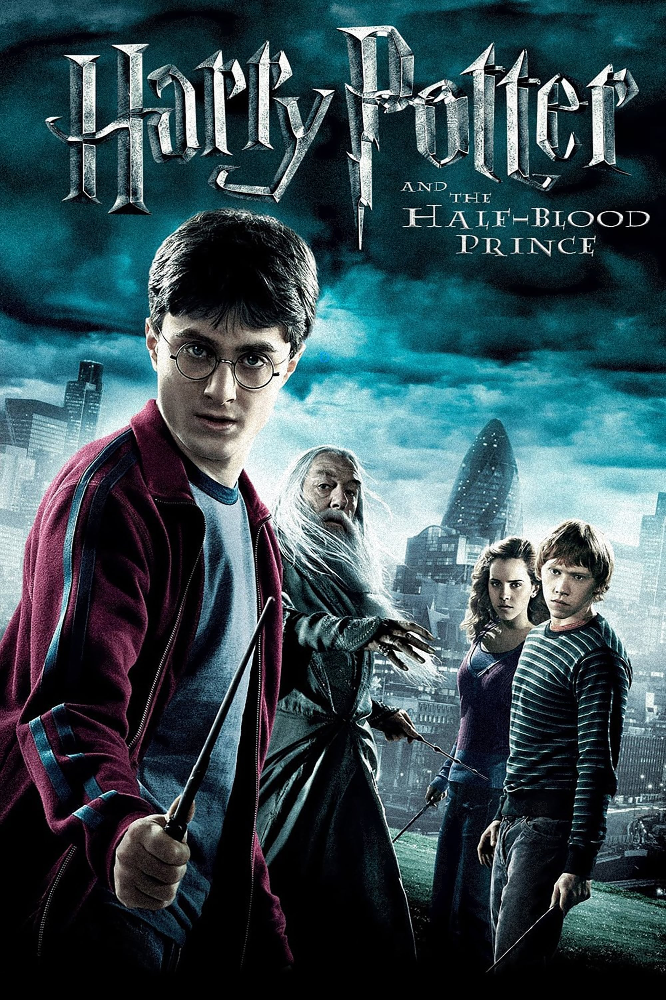

Harry Potter and the Half-Blood Prince
Harry Potter and the Half-Blood Prince is a 2009 fantasy film directed by David Yates from a screenplay by Steve Kloves, based on the 2005 novel of the same name by J. K. Rowling. It is the sequel to Harry Potter and the Order of the Phoenix (2007) and the sixth instalment in the Harry Potter film series. It stars Daniel Radcliffe as Harry Potter, alongside Rupert Grint and Emma Watson as Harry's best friends Ron Weasley and Hermione Granger respectively. The story follows Harry's sixth year at Hogwarts as he receives a mysterious textbook, falls in love, and attempts to retrieve a memory that holds the key to Lord Voldemort's downfall

PLOT
Lord Voldemort tightens his grip on the wizarding and Muggle worlds: his Death Eaters kidnap Mr Ollivander and destroy London's Millennium Bridge. With Lucius Malfoy incarcerated in Azkaban, Voldemort chooses his son, Draco Malfoy, to carry out a secret mission at Hogwarts. Draco's mother, Narcissa, and aunt Bellatrix Lestrange seek out Severus Snape, who gains their confidence by claiming he is a mole within the Order of the Phoenix. Snape makes an Unbreakable Vow with Narcissa to protect Draco and fulfil his task should he fail.
Harry Potter accompanies Albus Dumbledore to persuade former Potions professor Horace Slughorn to return to Hogwarts. Then, at the Burrow in Greater London, Harry reunites with his best friends Ron and Hermione. In Diagon Alley, they see Draco and Narcissa Malfoy, and follow them into Knockturn Alley. The pair meet with Death Eaters, including the werewolf Fenrir Greyback, at Borgin & Burke's. Harry believes Draco is now a Death Eater, but Ron and Hermione are sceptical. On the Hogwarts Express, Harry sneaks into the Slytherin carriage wearing his Invisibility Cloak to spy on Malfoy. Malfoy notices and petrifies Harry, leaving him on the train. Luna Lovegood finds him and counters Draco's spell.
Harry discovers that his used Potions textbook is filled with helpful notes and spells added by the "Half-Blood Prince". Using it, Harry excels in class, annoying Hermione and impressing Slughorn, who awards him a Liquid Luck potion. Ron makes the Gryffindor Quidditch team as Keeper and begins dating Lavender Brown, upsetting Hermione. Harry consoles Hermione while acknowledging his own feelings for Ginny Weasley. Harry spends the Christmas holidays with the Weasleys. His suspicions about Draco are dismissed by the Order, but Arthur Weasley reveals that the Malfoys may be interested in a Vanishing Cabinet at Borgin & Burke's. Bellatrix and Greyback attack and destroy the Burrow.
In Hagrid's hut, Harry uses his Liquid Luck potion to convince the reluctant Slughorn to surrender the memory Dumbledore needs. Viewing it in the Penseive, Dumbledore and Harry learn Voldemort sought information about Horcruxes, magical objects containing pieces of a wizard's soul for immortality. Dumbledore surmises Voldemort divided his soul into six Horcruxes, two of which have been destroyed: Tom Riddle's diary and Marvolo Gaunt's ring. They travel to a cave where Harry aids Dumbledore in drinking a potion that hides another Horcrux, Slytherin's locket
A weakened Dumbledore defends them from Inferi by creating a ring of fire, and apparates them back to Hogwarts, where Bellatrix, Greyback, and other Death Eaters have entered through the Vanishing Cabinet in the Room of Requirement that Draco has secretly connected to one in Knockturn Alley. As Harry hides, Draco appears and disarms the headmaster, revealing Voldemort chose him to kill Dumbledore. Draco hesitates; Snape, however, arrives and kills Dumbledore. As the Death Eaters escape, Snape reveals to Harry that he is the Half-Blood Prince.
As Hogwarts students and staff mourn Dumbledore's death, Harry tells Ron and Hermione that the locket is fake and contains a message from "R.A.B.", who stole the real Horcrux intending to destroy it. Harry, Ron and Hermione agree to forgo their final Hogwarts year to hunt for the remaining Horcruxes.
CAST
•Harry Potter
•Ron Weasley
•Hermione Granger
•Neville Longbottom
•Professor Albus Dumbledore
• Professor Minerva McGonagall
•Petunia Dursley
•Vernon Dursley
• Oliver Wood
• Professor Quirrell
• Professor Severus Snape
•Argus Filch
• the Weasley twins
• Mrs. Norris
•the dumpy Herbology teacher
•Head of Hufflepuff House Professor Sprout
• Professor Flitwick
• Charms teacher
• Professor Binns
•sirius black
• Vernon Dursley
• Draco Malfoy
FILMING
Stuart Craig, the production designer of the first five films, stayed on to design all the sets in Half-Blood Prince.

The Hogwarts Express is a train that carries pupils non-stop from Platform 9+3⁄4 at King's Cross station in London to Hogsmeade Station, near Hogwarts